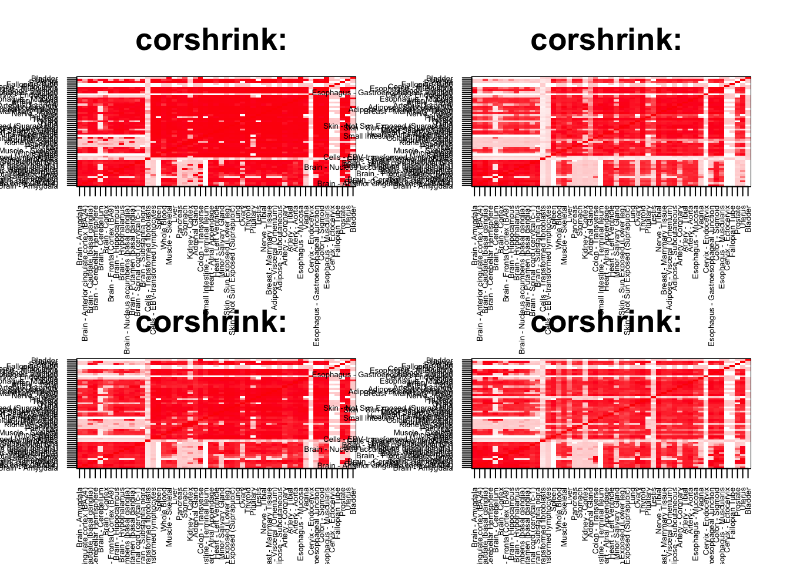
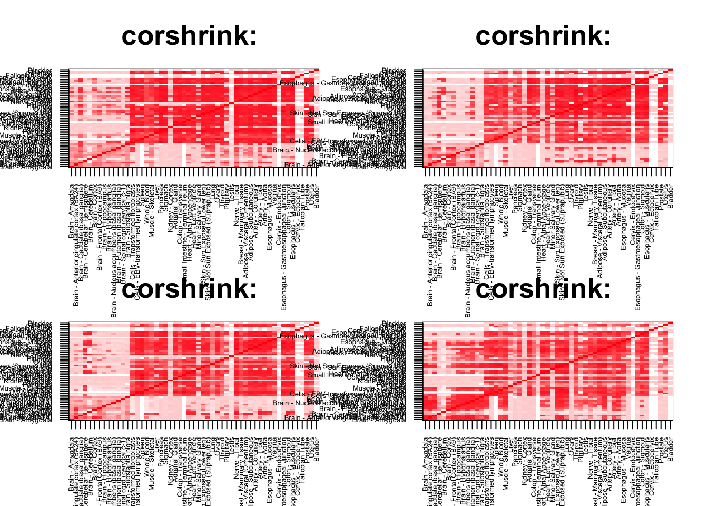
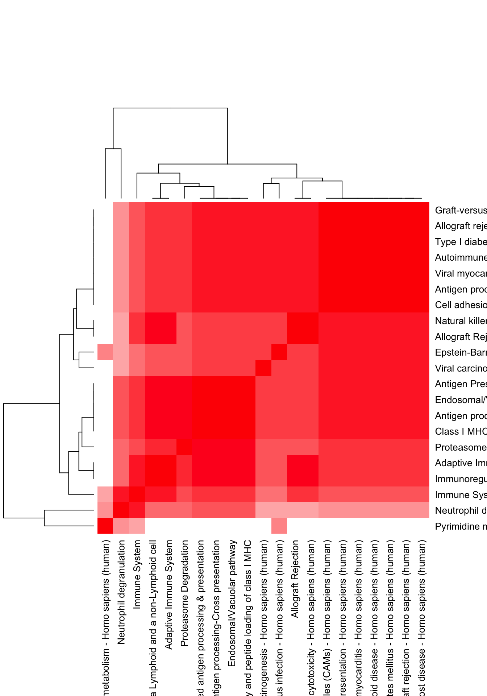
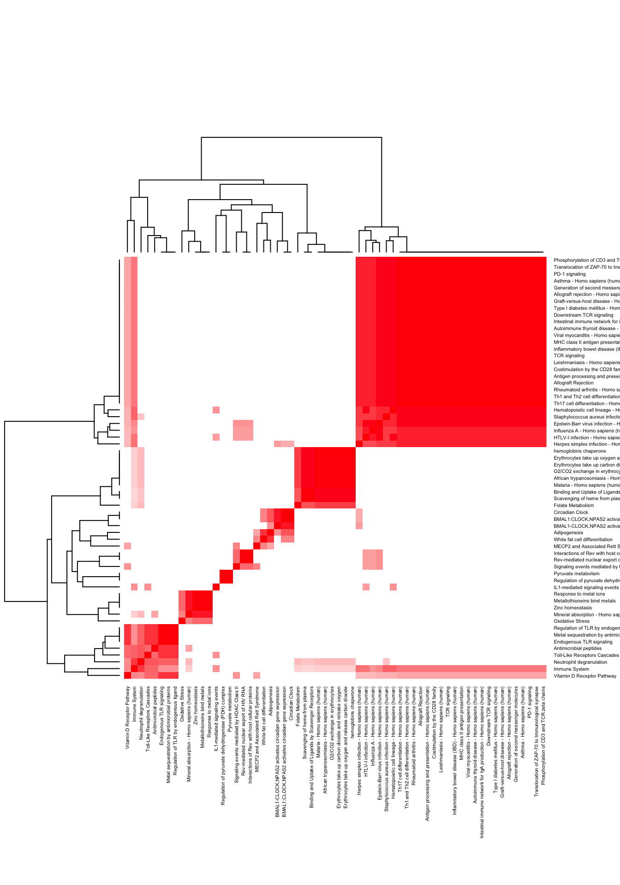

rm(list=ls())
corshrink_data <- get(load("../output/genewide_ash_out_tissue_mat_corshrink_halfuniform.rda"))
cor_data <- get(load("../output/cor_tissues_non_ash_voom_pearson.rda"))common_samples <- get(load("../output/common_samples.rda"))
tissue_labels <- read.table(file = "../data/GTEX_V6/samples_id.txt")[,3]
#library(data.table)
#data <- data.frame(fread("../data/GTEX_V6/cis_gene_expression.txt"))
#matdata <- t(data[,-c(1,2)])
gene_names <- as.character(read.table(file = "../data/GTEX_V6/gene_names_GTEX_V6.txt")[,1])
gene_names_1 <- as.character(sapply(gene_names, function(x) return(strsplit(x, "[.]")[[1]][1])))
U <- unique(tissue_labels)tab <- array(0, dim(corshrink_data)[3])
lymph_fibro_2_set <- match(c("Cells - EBV-transformed lymphocytes",
"Cells - Transformed fibroblasts"), U)
for(m in 1:dim(corshrink_data)[3]){
temp <- corshrink_data[lymph_fibro_2_set, - lymph_fibro_2_set, m]
temp1 <- corshrink_data[-lymph_fibro_2_set, -lymph_fibro_2_set, m]
tab[m] <- median(temp) - median(temp1[row(temp1) > col(temp1)])
}
ordering_high <- order(tab, decreasing = TRUE)[1:100]
ordering_low <- order(tab, decreasing = FALSE)[1:100]par(mfrow=c(2,2))
for(j in 1:4){
col=c(rev(rgb(seq(1,0,length=1000),1,seq(1,0,length=1000))),
rgb(1,seq(1,0,length=1000),seq(1,0,length=1000)))
image(as.matrix(corshrink_data[order_index,order_index, ordering_low[j]]),
col=col, main=paste0("corshrink: "), cex.main=2,
xaxt = "n", yaxt = "n", zlim=c(-1,1))
axis(1, at = seq(0, 1, length.out = 53), labels = U[order_index], las=2, cex.axis = 0.5)
axis(2, at = seq(0, 1, length.out = 53), labels = U[order_index], las=2, cex.axis = 0.5)
}
par(mfrow=c(2,2))
for(j in 1:4){
col=c(rev(rgb(seq(1,0,length=1000),1,seq(1,0,length=1000))),
rgb(1,seq(1,0,length=1000),seq(1,0,length=1000)))
image(as.matrix(corshrink_data[order_index,order_index, ordering_high[j]]),
col=col, main=paste0("corshrink: "), cex.main=2,
xaxt = "n", yaxt = "n", zlim=c(-1,1))
axis(1, at = seq(0, 1, length.out = 53), labels = U[order_index], las=2, cex.axis = 0.5)
axis(2, at = seq(0, 1, length.out = 53), labels = U[order_index], las=2, cex.axis = 0.5)
}
high_lymph_fibro_2_genes <- gene_names_1[ordering_high]
low_lymph_fibro_2_genes <- gene_names_1[ordering_low]
write.table(cbind.data.frame(high_lymph_fibro_2_genes), quote = FALSE, file = "../utilities/lymph_fibro_2/high_lymph_fibro_2.txt", row.names = FALSE, col.names = FALSE)
write.table(cbind.data.frame(low_lymph_fibro_2_genes), quote = FALSE, file = "../utilities/lymph_fibro_2/low_lymph_fibro_2.txt", row.names = FALSE, col.names = FALSE)tab <- read.delim("../utilities/lymph_fibro_2/pathway_high.tab")
head(cbind.data.frame(tab$pathway, tab$q.value), 30)## tab$pathway
## 1 Endosomal/Vacuolar pathway
## 2 Proteasome Degradation
## 3 Antigen Presentation: Folding, assembly and peptide loading of class I MHC
## 4 Antigen processing-Cross presentation
## 5 Immunoregulatory interactions between a Lymphoid and a non-Lymphoid cell
## 6 Allograft Rejection
## 7 Natural killer cell mediated cytotoxicity - Homo sapiens (human)
## 8 Allograft rejection - Homo sapiens (human)
## 9 Graft-versus-host disease - Homo sapiens (human)
## 10 Type I diabetes mellitus - Homo sapiens (human)
## 11 Epstein-Barr virus infection - Homo sapiens (human)
## 12 Viral carcinogenesis - Homo sapiens (human)
## 13 Neutrophil degranulation
## 14 Autoimmune thyroid disease - Homo sapiens (human)
## 15 Viral myocarditis - Homo sapiens (human)
## 16 Antigen processing and presentation - Homo sapiens (human)
## 17 Class I MHC mediated antigen processing & presentation
## 18 Pyrimidine metabolism - Homo sapiens (human)
## 19 Adaptive Immune System
## 20 Immune System
## 21 Cell adhesion molecules (CAMs) - Homo sapiens (human)
## tab$q.value
## 1 6.208777e-06
## 2 6.208777e-06
## 3 1.687757e-05
## 4 1.135101e-04
## 5 2.337120e-04
## 6 3.312395e-04
## 7 1.199737e-03
## 8 2.352255e-03
## 9 2.444496e-03
## 10 2.535318e-03
## 11 2.535318e-03
## 12 2.535318e-03
## 13 2.652784e-03
## 14 2.652784e-03
## 15 3.075692e-03
## 16 4.544165e-03
## 17 6.721853e-03
## 18 8.084261e-03
## 19 1.073447e-02
## 20 1.162678e-02
## 21 1.283937e-02pathway2 <- read.delim("../utilities/lymph_fibro_2/pathway_high.tab")
if(length(which(pathway2$q.value < 0.05)) > 2){
pathway2 <- pathway2[which(pathway2$q.value < 0.05),]
}
maxpath = 75
pathway <- pathway2[1:min(maxpath, dim(pathway2)[1]), ]
ensembl_genes <- pathway$members_input_overlap
pathway_list_genes <- sapply(ensembl_genes, function(x) return(strsplit(as.character(x), "; ")))
all_genes <- Reduce(union, pathway_list_genes)
pathway_mat <- matrix(0, length(pathway_list_genes), length(all_genes))
for(l in 1:dim(pathway_mat)[1]){
pathway_mat[l, match(pathway_list_genes[[l]], all_genes)] <- 1
}
pathway_bimat <- (pathway_mat)%*%t(pathway_mat)
pathway_bimat_prop <- diag(1/sqrt(diag(pathway_bimat)), dim(pathway_bimat)[1]) %*% pathway_bimat %*% diag(1/sqrt(diag(pathway_bimat)), dim(pathway_bimat)[1])
col=c(rev(rgb(seq(1,0,length=1000),1,seq(1,0,length=1000))),
rgb(1,seq(1,0,length=1000),seq(1,0,length=1000)))
heatmap(pathway_bimat_prop, labRow = pathway$pathway, labCol = pathway$pathway, cexRow = 1, cexCol = 1, col = col, zlim = c(-1,1),
scale = "none", margins = c(5, 5))
tab <- read.delim("../utilities/lymph_fibro_2/GO_high.tab")
head(cbind.data.frame(tab$term_name, tab$q.value), 30)## tab$term_name
## 1 MHC class I protein complex
## 2 MHC protein complex
## 3 antigen processing and presentation of peptide antigen via MHC class I
## 4 lumenal side of endoplasmic reticulum membrane
## 5 integral component of lumenal side of endoplasmic reticulum membrane
## 6 peptide antigen binding
## 7 antigen processing and presentation
## 8 peptide binding
## 9 amide binding
## 10 antigen binding
## 11 ER to Golgi transport vesicle membrane
## 12 phagocytic vesicle membrane
## 13 beta-2-microglobulin binding
## 14 antigen processing and presentation of exogenous peptide antigen via MHC class I
## 15 antigen processing and presentation of peptide antigen
## 16 antigen processing and presentation of endogenous peptide antigen via MHC class I
## 17 type I interferon signaling pathway
## 18 antigen processing and presentation of endogenous peptide antigen
## 19 response to type I interferon
## 20 interferon-gamma-mediated signaling pathway
## 21 antigen processing and presentation of endogenous antigen
## 22 early endosome membrane
## 23 integral component of endoplasmic reticulum membrane
## 24 intrinsic component of endoplasmic reticulum membrane
## 25 coated vesicle membrane
## 26 endocytic vesicle membrane
## 27 transport vesicle membrane
## 28 response to interferon-gamma
## 29 antigen processing and presentation of exogenous peptide antigen
## 30 antigen processing and presentation of exogenous antigen
## tab$q.value
## 1 2.606439e-06
## 2 1.668385e-04
## 3 5.303747e-04
## 4 2.269314e-04
## 5 2.836642e-05
## 6 1.277039e-04
## 7 4.928056e-04
## 8 1.326869e-04
## 9 2.969055e-04
## 10 2.969055e-04
## 11 6.303631e-04
## 12 6.303631e-04
## 13 3.985254e-04
## 14 1.695631e-03
## 15 6.906846e-03
## 16 1.695631e-03
## 17 1.695631e-03
## 18 6.306219e-03
## 19 1.695631e-03
## 20 1.695631e-03
## 21 8.413432e-03
## 22 3.402962e-03
## 23 3.865103e-03
## 24 6.826061e-03
## 25 6.826061e-03
## 26 6.826061e-03
## 27 6.826061e-03
## 28 8.761471e-03
## 29 3.222036e-02
## 30 3.338369e-02tab <- read.delim("../utilities/lymph_fibro_2/pathway_low.tab")
head(cbind.data.frame(tab$pathway, tab$q.value), 30)## tab$pathway
## 1 Scavenging of heme from plasma
## 2 Erythrocytes take up oxygen and release carbon dioxide
## 3 hemoglobins chaperone
## 4 Erythrocytes take up carbon dioxide and release oxygen
## 5 O2/CO2 exchange in erythrocytes
## 6 Binding and Uptake of Ligands by Scavenger Receptors
## 7 BMAL1:CLOCK,NPAS2 activates circadian gene expression
## 8 Staphylococcus aureus infection - Homo sapiens (human)
## 9 Translocation of ZAP-70 to Immunological synapse
## 10 Phosphorylation of CD3 and TCR zeta chains
## 11 PD-1 signaling
## 12 Asthma - Homo sapiens (human)
## 13 Metal sequestration by antimicrobial proteins
## 14 African trypanosomiasis - Homo sapiens (human)
## 15 Generation of second messenger molecules
## 16 Circadian Clock
## 17 Allograft rejection - Homo sapiens (human)
## 18 Graft-versus-host disease - Homo sapiens (human)
## 19 Hematopoietic cell lineage - Homo sapiens (human)
## 20 Influenza A - Homo sapiens (human)
## 21 Antimicrobial peptides
## 22 Type I diabetes mellitus - Homo sapiens (human)
## 23 Herpes simplex infection - Homo sapiens (human)
## 24 Downstream TCR signaling
## 25 Intestinal immune network for IgA production - Homo sapiens (human)
## 26 Malaria - Homo sapiens (human)
## 27 Metallothioneins bind metals
## 28 Response to metal ions
## 29 Autoimmune thyroid disease - Homo sapiens (human)
## 30 Mineral absorption - Homo sapiens (human)
## tab$q.value
## 1 1.185283e-05
## 2 2.816282e-04
## 3 3.371078e-04
## 4 3.371078e-04
## 5 3.371078e-04
## 6 3.371078e-04
## 7 7.629258e-04
## 8 9.046033e-04
## 9 1.107871e-03
## 10 1.477170e-03
## 11 1.513960e-03
## 12 2.119816e-03
## 13 2.119816e-03
## 14 2.679475e-03
## 15 2.782460e-03
## 16 2.782460e-03
## 17 2.842205e-03
## 18 3.306977e-03
## 19 3.306977e-03
## 20 3.415534e-03
## 21 3.432487e-03
## 22 3.432487e-03
## 23 3.822861e-03
## 24 3.839217e-03
## 25 3.926386e-03
## 26 4.266727e-03
## 27 4.267344e-03
## 28 4.267344e-03
## 29 4.400062e-03
## 30 4.400062e-03pathway2 <- read.delim("../utilities/lymph_fibro_2/pathway_low.tab")
if(length(which(pathway2$q.value < 0.05)) > 2){
pathway2 <- pathway2[which(pathway2$q.value < 0.05),]
}
maxpath = 75
pathway <- pathway2[1:min(maxpath, dim(pathway2)[1]), ]
ensembl_genes <- pathway$members_input_overlap
pathway_list_genes <- sapply(ensembl_genes, function(x) return(strsplit(as.character(x), "; ")))
all_genes <- Reduce(union, pathway_list_genes)
pathway_mat <- matrix(0, length(pathway_list_genes), length(all_genes))
for(l in 1:dim(pathway_mat)[1]){
pathway_mat[l, match(pathway_list_genes[[l]], all_genes)] <- 1
}
pathway_bimat <- (pathway_mat)%*%t(pathway_mat)
pathway_bimat_prop <- diag(1/sqrt(diag(pathway_bimat)), dim(pathway_bimat)[1]) %*% pathway_bimat %*% diag(1/sqrt(diag(pathway_bimat)), dim(pathway_bimat)[1])
col=c(rev(rgb(seq(1,0,length=1000),1,seq(1,0,length=1000))),
rgb(1,seq(1,0,length=1000),seq(1,0,length=1000)))
heatmap(pathway_bimat_prop, labRow = pathway$pathway, labCol = pathway$pathway, cexRow = 0.4, cexCol = 0.4, col = col, zlim = c(-1,1),
scale = "none", margins = c(5, 5))
tab <- read.delim("../utilities/lymph_fibro_2/GO_low.tab")
head(cbind.data.frame(tab$term_name, tab$q.value), 30)## tab$term_name tab$q.value
## 1 haptoglobin binding 1.426280e-06
## 2 RAGE receptor binding 1.399409e-06
## 3 haptoglobin-hemoglobin complex 6.165235e-06
## 4 endocytic vesicle 4.687245e-05
## 5 hemoglobin complex 1.662146e-04
## 6 defense response to fungus 1.483949e-03
## 7 oxygen transporter activity 2.526003e-04
## 8 response to external biotic stimulus 1.363772e-03
## 9 response to other organism 3.313894e-03
## 10 defense response 1.363772e-03
## 11 production of molecular mediator of immune response 5.780564e-04
## 12 MHC class II protein complex 1.387844e-04
## 13 response to biotic stimulus 5.780564e-04
## 14 endocytic vesicle lumen 1.387844e-04
## 15 immune effector process 5.780564e-04
## 16 response to fungus 2.547242e-03
## 17 gas transport 3.800524e-03
## 18 response to chemical 6.114721e-04
## 19 cellular response to chemical stimulus 2.078741e-03
## 20 cytokine production 2.139657e-03
## 21 regulation of defense response 2.950872e-03
## 22 hydrogen peroxide catabolic process 4.314534e-03
## 23 Toll-like receptor 4 binding 1.480724e-03
## 24 regulation of inflammatory response 2.950872e-03
## 25 response to cytokine 4.314534e-03
## 26 MHC protein complex 4.258689e-03
## 27 innate immune response 3.135427e-03
## 28 arachidonic acid binding 1.868951e-03
## 29 cytokine production involved in immune response 3.135427e-03
## 30 cellular response to cytokine stimulus 3.709496e-03This R Markdown site was created with workflowr